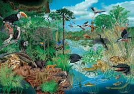

Tipos de ecosistemas
Los ecosistemas terrestres son abundantes, y pueden clasificarse conforme a sus características climáticas y a los factores abióticos presentes en ellos:
- Áridos:Aquellos de baja incidencia de precipitación y por lo tanto enorme sequía, con temperaturas altas durante el día y bajas de noche (o bajas y más bajas aún, como el desierto polar antártico) y condiciones difíciles para la vida. Suele haber poca vegetación y vida muy especializada a las condiciones.
- Praderas: Ecosistemas de vegetación baja y por lo general en planicies, inundables o no durante la época de lluvia, en los que la vida animal abunda y suele haber gran variación climática durante las estaciones.
- Selváticos: Por lo general presentan grandes acumulaciones de vegetación tupida, de gran tamaño, con sotobosque muy bajo y enormes acumulaciones de materia orgánica. Son hervideros de vida, con miles de especies de todo tipo y ciclos climáticos cálidos y húmedos, usuales del ecuador.
- Montañosos: Usualmente mixtos, combinando otros ecosistemas pero tendiendo hacia el árido a medida que se asciende en la montaña, dada la baja del oxígeno y de las temperaturas.
- Desiertos cálidos: Los ecosistemas áridos por excelencia, con vegetación xerófita adaptada al extremo calor diurno y a la poquísima precipitación, pero con una fauna muy particular que se refugia del calor como puede. Ocupan actualmente un tercio del planeta Tierra en total.
- Selva tropical húmeda: Ubicada en las regiones del ecuador de América y África, se trata de enormes aglomeraciones de vida vegetal y animal, en hábitats cerrados y de abundantes precipitaciones. Suelen darse en regiones calurosas, sin estaciones más allá de una época seca y otra de lluvia. Son las regiones con más biodiversidad del planeta.
- Pastisales:Llamados también herbazales o praderas, son ecosistemas en los que predomina una vegetación herbácea, es decir, de hierbas de baja altura. Suelen darse en lugares de baja precipitación y temperaturas templadas, con veranos intensos e inviernos fríos.
- Taiga: También llamado bosque boreal o bosque de coníferas, se trata de grandes formaciones cerradas de vegetación alta, consideradas la mayor masa forestal del planeta. Se ubican en las zonas frías del norte de Rusia y Siberia, en el norte de Canadá y de Europa, y tienen temperaturas de 19 °C en verano y de -30 °C en invierno, es decir, una enorme variación térmica. Su fauna está compuesta de pequeños mamíferos y depredadores terrestres y aéreos, principalmente.
